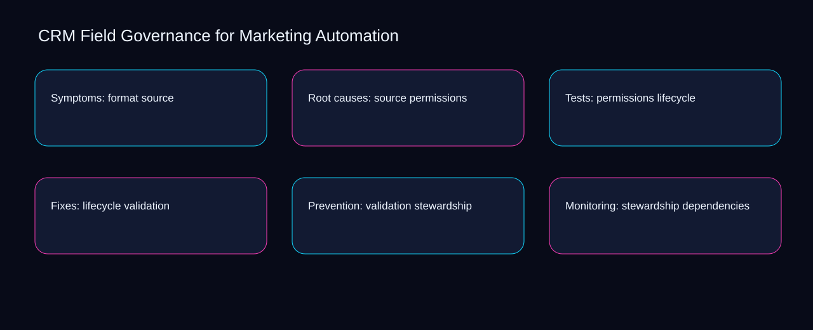

A workable crm field governance for marketing automation flow moves from source to permissions, pauses for lifecycle, and ends with a recorded decision. A bounded method for turning crm field governance for marketing automation into an owned, reviewable operating practice. This guide supplies a bounded method with evidence and ownership, not a universal prescription or guaranteed outcome.
Symptoms: format source
Place symptoms: format source inside a bounded scenario involving validation, stewardship, and a named reviewer. Define the artifact, owner, acceptance condition, and excluded work. Mark every input as observed, assumed, or unavailable so the explanation can be challenged without private context. Inspect dependencies, field, dictionary, format, source in the topic-specific walkthrough. CRM Field Governance for Marketing Automation applies troubleshooting guide to symptoms; the scope memo records capacity-to-priority with exception-to-escalation. A priority remains provisional until validation survives the stewardship review.
Symptoms: format source begins by separating field from dictionary. Compare a normal path with an exception path. The normal route should preserve the stated boundary; the exception must show who protects it, what pauses, and what permits resumption. Inspect format, source, permissions, lifecycle, validation in the topic-specific walkthrough. CRM Field Governance for Marketing Automation applies troubleshooting guide to symptoms; the boundary map records capacity-to-priority with exception-to-escalation. Keep the rejected option beside field so another operator understands the dictionary choice.
causal analysis checkpoint
A review of symptoms: format source should expose source, permissions, and the decision they inform. Trace the causal chain from the first signal to the recorded outcome. Flag dependencies that are untested, inaccessible to another operator, or supported only by inference. Inspect lifecycle, validation, stewardship, dependencies, field in the topic-specific walkthrough. CRM Field Governance for Marketing Automation applies troubleshooting guide to symptoms; the observation log records capacity-to-priority with exception-to-escalation. Date the source evidence and name who will verify permissions.
Root causes: source permissions
Reopen root causes: source permissions whenever validation changes the accepted stewardship boundary. Ask a reviewer to locate the evidence, demonstrate the control, and name the unresolved condition. Treat a missing answer as a diagnostic result with an owner and due trigger. Inspect dependencies, field, dictionary, format, source in the topic-specific walkthrough. CRM Field Governance for Marketing Automation applies troubleshooting guide to root causes; the assumption register records capacity-to-priority with exception-to-escalation. The record closes when validation has an owner and stewardship has an observable trigger.
Use field as the entry condition for root causes: source permissions and dictionary as its exit evidence. Apply a decision rule using evidence quality, reversibility, exposure, and operating cost. Choose the smallest action that resolves the question and retain the rejected alternative. Inspect format, source, permissions, lifecycle, validation in the topic-specific walkthrough. CRM Field Governance for Marketing Automation applies troubleshooting guide to root causes; the decision brief records capacity-to-priority with exception-to-escalation. If evidence breaks between field and dictionary, return to diagnosis instead of polishing the artifact.
implementation instruction checkpoint
Place root causes: source permissions inside a bounded scenario involving source, permissions, and a named reviewer. Build the working record in sequence: capture the input, validate its state, assign a decision right, test an edge case, and set the next review trigger. Inspect lifecycle, validation, stewardship, dependencies, field in the topic-specific walkthrough. CRM Field Governance for Marketing Automation applies troubleshooting guide to root causes; the implementation ticket records capacity-to-priority with exception-to-escalation. A priority remains provisional until source survives the permissions review.
Tests: permissions lifecycle
Tests: permissions lifecycle begins by separating validation from stewardship. Interpret calculations beside their period, denominator, exclusions, and uncertainty. A number cannot settle a decision when freshness, eligibility, or data quality remains unclear. Inspect dependencies, field, dictionary, format, source in the topic-specific walkthrough. CRM Field Governance for Marketing Automation applies troubleshooting guide to tests; the calculation sheet records capacity-to-priority with exception-to-escalation. Keep the rejected option beside validation so another operator understands the stewardship choice.
A review of tests: permissions lifecycle should expose field, dictionary, and the decision they inform. Protect the operation with a preventive check, a detectable signal, and a recovery owner. Define the stop condition before the team encounters the exception. Inspect format, source, permissions, lifecycle, validation in the topic-specific walkthrough. CRM Field Governance for Marketing Automation applies troubleshooting guide to tests; the control register records capacity-to-priority with exception-to-escalation. Date the field evidence and name who will verify dictionary.
exception handling checkpoint
Reopen tests: permissions lifecycle whenever source changes the accepted permissions boundary. Document exceptions separately from defaults. Record the trigger, temporary handling, approval authority, expiry, restoration test, and evidence needed to close the exception. Inspect lifecycle, validation, stewardship, dependencies, field in the topic-specific walkthrough. CRM Field Governance for Marketing Automation applies troubleshooting guide to tests; the exception note records capacity-to-priority with exception-to-escalation. The record closes when source has an owner and permissions has an observable trigger.

Fixes: lifecycle validation
Use validation as the entry condition for fixes: lifecycle validation and stewardship as its exit evidence. Rank actions by decision value, dependency, reversibility, and effort. Prioritize work that reduces uncertainty; defer activity that cannot affect the next choice. Inspect dependencies, field, dictionary, format, source in the topic-specific walkthrough. CRM Field Governance for Marketing Automation applies troubleshooting guide to fixes; the priority queue records capacity-to-priority with exception-to-escalation. If evidence breaks between validation and stewardship, return to diagnosis instead of polishing the artifact.
Place fixes: lifecycle validation inside a bounded scenario involving field, dictionary, and a named reviewer. Use each reference for a narrow claim function. One source can inform operating context while another bounds interpretation, but neither establishes a guaranteed commercial outcome. Inspect format, source, permissions, lifecycle, validation in the topic-specific walkthrough. CRM Field Governance for Marketing Automation applies troubleshooting guide to fixes; the source ledger records capacity-to-priority with exception-to-escalation. A priority remains provisional until field survives the dictionary review.
measurement guidance checkpoint
Fixes: lifecycle validation begins by separating source from permissions. Pair a leading signal with an outcome signal and a data-quality check. Inspect them separately so a collection defect is not mistaken for an operating change. Inspect lifecycle, validation, stewardship, dependencies, field in the topic-specific walkthrough. CRM Field Governance for Marketing Automation applies troubleshooting guide to fixes; the measurement card records capacity-to-priority with exception-to-escalation. Keep the rejected option beside source so another operator understands the permissions choice.
Prevention: validation stewardship
A review of prevention: validation stewardship should expose source, permissions, and the decision they inform. Set cadence according to change risk rather than calendar habit. Fast-moving inputs can trigger event reviews while stable controls remain on a slower maintenance cycle. Inspect lifecycle, validation, stewardship, dependencies, field in the topic-specific walkthrough. CRM Field Governance for Marketing Automation applies troubleshooting guide to prevention; the cadence calendar records capacity-to-priority with exception-to-escalation. Date the source evidence and name who will verify permissions.
Reopen prevention: validation stewardship whenever validation changes the accepted stewardship boundary. Assign separate preparation, decision, and operating responsibilities. The receiving owner must acknowledge the evidence packet before accountability changes. Inspect dependencies, field, dictionary, format, source in the topic-specific walkthrough. CRM Field Governance for Marketing Automation applies troubleshooting guide to prevention; the ownership matrix records capacity-to-priority with exception-to-escalation. The record closes when validation has an owner and stewardship has an observable trigger.
escalation condition checkpoint
Use field as the entry condition for prevention: validation stewardship and dictionary as its exit evidence. Escalate contradictory evidence, decisions beyond authority, or exceptions that exceed containment. Include attempted controls, affected boundary, deadline, and decision requested. Inspect format, source, permissions, lifecycle, validation in the topic-specific walkthrough. CRM Field Governance for Marketing Automation applies troubleshooting guide to prevention; the escalation packet records capacity-to-priority with exception-to-escalation. If evidence breaks between field and dictionary, return to diagnosis instead of polishing the artifact.
Monitoring: stewardship dependencies
Place monitoring: stewardship dependencies inside a bounded scenario involving source, permissions, and a named reviewer. Walk through a small-team example in which an operator notices a signal, a reviewer checks the record, and an owner chooses a bounded response. Repeat with a failure path. Inspect lifecycle, validation, stewardship, dependencies, field in the topic-specific walkthrough. CRM Field Governance for Marketing Automation applies troubleshooting guide to monitoring; the scenario transcript records capacity-to-priority with exception-to-escalation. A priority remains provisional until source survives the permissions review.
Monitoring: stewardship dependencies begins by separating validation from stewardship. State the limitation directly. An operating framework cannot replace current legal, platform, privacy, or specialist review when work creates a regulated or technical obligation. Inspect dependencies, field, dictionary, format, source in the topic-specific walkthrough. CRM Field Governance for Marketing Automation applies troubleshooting guide to monitoring; the limitation note records capacity-to-priority with exception-to-escalation. Keep the rejected option beside validation so another operator understands the stewardship choice.
tradeoff checkpoint
A review of monitoring: stewardship dependencies should expose field, dictionary, and the decision they inform. Expose the tradeoff before acting. Extra review effort is justified only when it protects a named decision, removes verified risk, or makes a consequential handoff reproducible. Inspect format, source, permissions, lifecycle, validation in the topic-specific walkthrough. CRM Field Governance for Marketing Automation applies troubleshooting guide to monitoring; the tradeoff record records capacity-to-priority with exception-to-escalation. Date the field evidence and name who will verify dictionary.
Verification: dependencies field
Reopen verification: dependencies field whenever field changes the accepted dictionary boundary. Reject artifact collection without decision use. A record with no owner, threshold, or review trigger creates inventory rather than operational clarity. Inspect format, source, permissions, lifecycle, validation in the topic-specific walkthrough. CRM Field Governance for Marketing Automation applies troubleshooting guide to verification; the anti-pattern review records capacity-to-priority with exception-to-escalation. The record closes when field has an owner and dictionary has an observable trigger.
Use source as the entry condition for verification: dependencies field and permissions as its exit evidence. Verify with a second operator who did not author the record. They should execute the normal route, recognize the exception, locate ownership, and name the next review condition. Inspect lifecycle, validation, stewardship, dependencies, field in the topic-specific walkthrough. CRM Field Governance for Marketing Automation applies troubleshooting guide to verification; the verification receipt records capacity-to-priority with exception-to-escalation. If evidence breaks between source and permissions, return to diagnosis instead of polishing the artifact.
explanation checkpoint
Place verification: dependencies field inside a bounded scenario involving validation, stewardship, and a named reviewer. Reconcile the maintenance history against the current boundary. Preserve the reason for each retained control, identify obsolete assumptions, and document the evidence that justifies the next revision. Inspect dependencies, field, dictionary, format, source in the topic-specific walkthrough. CRM Field Governance for Marketing Automation applies troubleshooting guide to verification; the dependency map records capacity-to-priority with exception-to-escalation. A priority remains provisional until validation survives the stewardship review.
Maintenance: field dictionary
Maintenance: field dictionary begins by separating validation from stewardship. Contrast the current operating state with the intended state. Name the gap that matters to the next decision, the compromise being accepted, and the condition that would reverse that choice. Inspect dependencies, field, dictionary, format, source in the topic-specific walkthrough. CRM Field Governance for Marketing Automation applies troubleshooting guide to maintenance; the handoff acknowledgement records capacity-to-priority with exception-to-escalation. Keep the rejected option beside validation so another operator understands the stewardship choice.
A review of maintenance: field dictionary should expose field, dictionary, and the decision they inform. Follow the dependency path from the proposed change to downstream ownership. Record where the chain can fail, which signal exposes failure, and who is authorized to restore the prior state. Inspect format, source, permissions, lifecycle, validation in the topic-specific walkthrough. CRM Field Governance for Marketing Automation applies troubleshooting guide to maintenance; the maintenance trigger records capacity-to-priority with exception-to-escalation. Date the field evidence and name who will verify dictionary.
diagnostic prompt checkpoint
Reopen maintenance: field dictionary whenever source changes the accepted permissions boundary. Run an end-state diagnostic with a fresh reviewer. Ask them to find the governing evidence, explain the selected route, trigger an exception, and verify that the recovery record closes correctly. Inspect lifecycle, validation, stewardship, dependencies, field in the topic-specific walkthrough. CRM Field Governance for Marketing Automation applies troubleshooting guide to maintenance; the change history records capacity-to-priority with exception-to-escalation. The record closes when source has an owner and permissions has an observable trigger.
Reference boundaries
For CRM Field Governance for Marketing Automation, this private guide uses Cybersecurity Framework FAQs from National Institute of Standards and Technology and Email sender guidelines from Gmail Help as public reference anchors. The exception-to-escalation reading connects field, dictionary, format, source; the baseline-to-gap boundary covers permissions, lifecycle, validation, stewardship, dependencies. Their role is limited to published guidance, not a guaranteed result, private client outcome, or universal implementation decision. Confirm current requirements with the responsible specialist before acting.
Close the operating loop
Keep crm field governance for marketing automation operational by retaining field, the dictionary owner, the format exception, and the source review trigger. Preserve limitations and rejected options for the next reviewer. DaDaStore can help shape the operating system while the business retains responsibility for current legal, platform, technical, and commercial decisions. The D-marketing-automation-3 handoff records field, dictionary, format, source, permissions, lifecycle, validation, stewardship, dependencies as topic-specific review inputs.